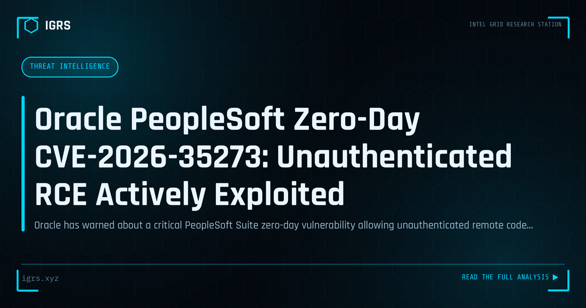

Oracle PeopleSoft Zero-Day CVE-2026-35273: Unauthenticated RCE Actively Exploited
| File No. | IGRS-067/2026 |
| Subject | Emergency advisory on Oracle PeopleSoft critical zero-day vulnerability with active exploitation confirmed |
| Category | Threat Intelligence |
| Author | Manuj Kumar Pandey |
| Published | 2026-06-12 |
| Reading time | 12 minutes |
Oracle has warned about a critical PeopleSoft Suite zero-day vulnerability allowing unauthenticated remote code execution. Active exploitation has been confirmed in ShinyHunters data theft campaigns. Indian enterprises and government departments using PeopleSoft require immediate action.
Oracle PeopleSoft Critical Vulnerability: Investigator's Brief
Enterprise resource planning systems like Oracle PeopleSoft hold an organisation's most sensitive data — HR records, financials, and personal information — making vulnerabilities in them particularly serious. A critical remote code execution vulnerability in such a platform represents a significant risk for the many Indian enterprises and institutions that rely on PeopleSoft. This brief examines the threat from a defender's and investigator's perspective.
Why ERP Vulnerabilities Are Critical
ERP systems are high-value targets because of what they hold and what they connect to. A compromise can expose employee personal data, financial records, and business-critical information, while the system's deep integration across the organisation provides attackers extensive reach. Remote code execution vulnerabilities — which allow attackers to run arbitrary code on the server — are the most severe class, potentially handing attackers full control of these critical systems.
Understanding the Risk
| Factor | Implication |
|---|---|
| Remote code execution | Full system compromise possible |
| Sensitive data held | HR, financial, personal records exposed |
| Internet exposure | Increases attack accessibility |
| Deep integration | Enables lateral movement |
Assessing Exposure
Organisations using PeopleSoft should urgently determine their exposure: which instances are deployed, whether any are internet-facing, what patch level they are at, and what data they hold. Internet-exposed instances are at greatest risk and warrant immediate attention. OSINT tools like Shodan can reveal externally visible PeopleSoft instances, helping organisations understand whether attackers can reach their systems directly.
Response Priorities
When a critical ERP vulnerability is disclosed, response priorities are clear: apply the vendor patch as soon as possible, restrict access to the system pending patching (especially removing internet exposure), monitor for signs of exploitation, and prepare incident response in case compromise has already occurred. Given the severity of RCE vulnerabilities in systems holding sensitive data, treating this as an urgent priority is appropriate.
Investigating Potential Compromise
If compromise is suspected, investigation focuses on the system's logs and behaviour: examining access and application logs for exploitation indicators, checking for unauthorised changes or unusual processes, looking for signs of data access or exfiltration, and preserving evidence properly under Section 63 BSA. Because ERP systems hold personal data, a confirmed breach also triggers DPDP Act 2026 notification obligations, making thorough, defensible investigation essential.
Legal and Compliance Dimensions
A breach of an ERP system holding personal data has significant legal implications in India. The DPDP Act 2026 requires breach notification to the Data Protection Board and affected individuals, with penalties for failures reaching ₹250 crore. Unauthorised access attracts IT Act provisions including Section 43 and Section 66. Organisations must therefore treat ERP security not only as an operational concern but as a compliance imperative with serious financial stakes.
Strengthening ERP Security
Beyond responding to specific vulnerabilities, organisations should strengthen ERP security systematically: keeping systems patched and updated, removing unnecessary internet exposure, enforcing strong authentication and access controls, monitoring for anomalous activity, and including ERP systems in security assessments. For the many Indian enterprises and institutions relying on PeopleSoft and similar platforms, proactive ERP security protects the sensitive data at the heart of the organisation — and avoids the severe operational, reputational, and regulatory consequences that an ERP compromise would bring.